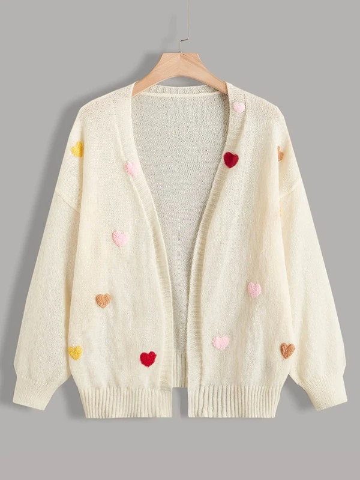

CARDIGAN
Cárdigan tejido de cable de manga farol Color:Beis Estilo:Casual Tipo de Estampado:Liso Detalles:Botón delantero Escote:cuello en 'v' o pico Longitud de la Manga:manga larga Tipos de Manga:manga obispo

SUDADERA CAPUCHA
Cremallera/sudadera capucha "Yet to Come" BTS CONCERT en BUSAN Material: Vellón Tamaño Regular suave y cómodo de llevar tanto en climas cálidos como fríos. Color: Púrpura lila/negro/blanco/aplicación
ARMYST ZIP-UP HOODY
Sudadera con capuchaMecanismo de cremallera plateada. Varios colores disponibles: negro; Blanco; Mostaza; Rosa